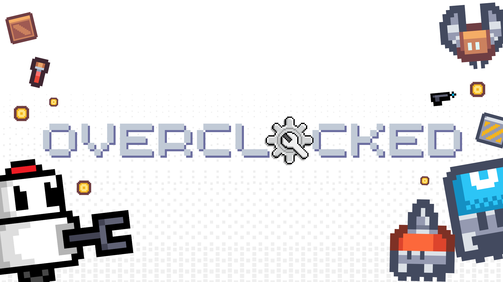
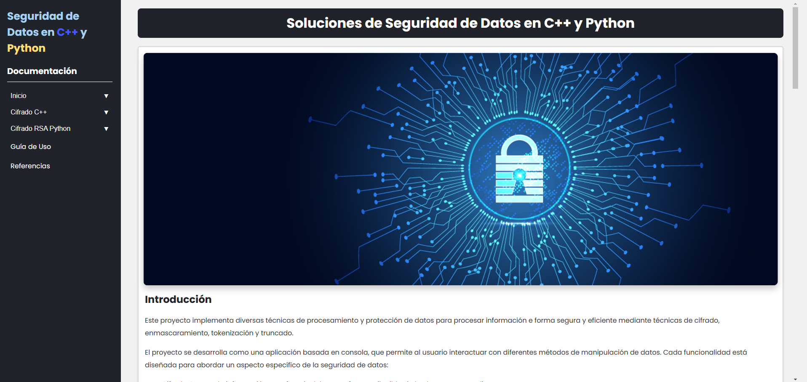

-
Full Stack Developer - Overclocked - Tecnológico de Monterrey (February - May 2025)
DescriptionI participated in the full development of the video game Overclocked, a 2D roguelite focused on competition and optimization. I also developed the design, programming, and deployment of the system, including the web interface and database.
Project repository on GitHub: Repository - Overclocked
Video game website: Web - Overclocked
Click the image to visit the video game's website!
-
Artificial Intelligence Intern - RSec (January - March 2025)
DescriptionPart-time job where I developed a project for 3 months using Artificial Intelligence models, aiming to translate real-time conversations for virtual meetings.
Programming in Python, use of AI models, Express.js server

Click the image to visit RSec's official website!
-
Participation in New Cybersecurity Talents Training - RSec (August-December 2024)
Training program for new talents in Cybersecurity at RSec, a multinational company specialized in cybersecurity. The training covered topics such as Data Security, Risk Analysis, Security Compliance and Regulations (ISO, NIST, NYCE), Forensic Computing, Virtual Machines (Kali Linux).
Project on GitHub: Cryptography
Documentation Website: Documentation
Visit the project documentation!
-
3rd place at Expo Ingenierías 3rd edition, Mexico City region - Tecnológico de Monterrey (June 6, 2024)
MATLAB simulation of solar panel cleaning using electric fields, aiming to reduce water waste.
-
Social Service at Microsoft Mexico - Tecnológico de Monterrey (January - June 2024)
Learning course at the Community Learning Center on basic Microsoft tools at Tecnológico de Monterrey, Campus Santa Fe. The course consisted of teaching Microsoft programs such as Word, Excel, PowerPoint, Teams, and Python programming to 2 beneficiaries.

-
Creation of the video game Sebas Night Runner - Tecnológico de Monterrey (April - May 2023)
2D runner-style video game based on beating a score and collecting coins to unlock characters or levels. Developed in C# with Unity. I handled both the programming and the design and animations used in the game.
-
Advertising and Marketing Strategies with Photography Company - Tecnológico de Monterrey (April - May 2023)
I created and developed a Market Research project for a photography company called Feeka Photo over 4 months. During this time, I analyzed their target market, conducted marketing studies with over 100 people of various ages to analyze brand retention and ways to improve consumer relations. Various ways to update the website were analyzed to create an accessible, friendly, and interesting experience for the public on both web browsers and mobile devices, proposing ways to automate certain actions to make them less repetitive and more intuitive.

Visit Feeka's official website!
-
Developer - Tecnológico de Monterrey (April 2022)
I created and developed a functional scale prototype of a product called SafeWalk, which is placed at traffic lights near pedestrian crossings, over 5 days. The project's goal was to reduce accidents at pedestrian crossings due to timing in highly populated cities. The project was carried out and qualified for a prototype competition with similar sector problems. It was developed using Micro:bit programming with JavaScript.